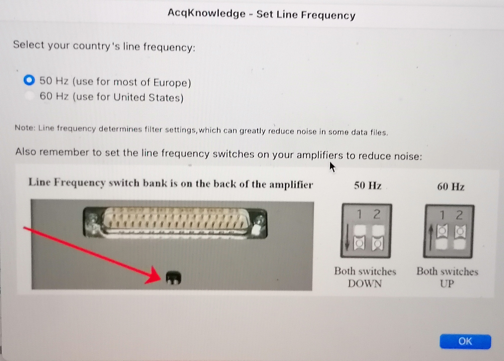
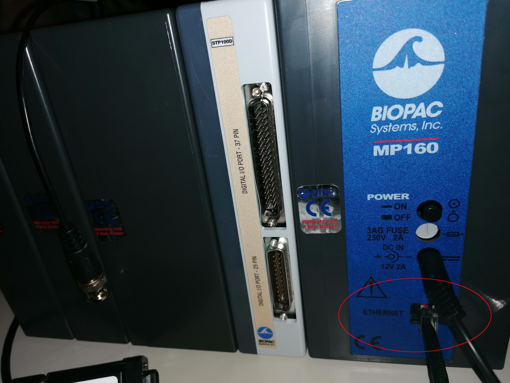
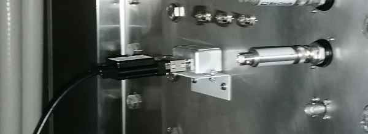

Before data collection starts
Scanner¶
Once finalized the protocol development (before the first session of the first participant), the protocol(s) MUST be frozen and remain unchanged throughout the data collection effort.
- Create the necessary protocols as described in the protocol management section.
Hardware: installation of instruments¶
Below is the overall setup of the instruments:
 |
|---|
| Stable configuration of the pyshiological and eye-tracking recording elements. Most of the recording devices are located on a rack in the access panel cupboard of the Control Room. |
Install the BIOPAC¶
-  Set up the line frequency switches on the back of the BIOPAC amplifier depending on your country frequency to reduce noise. Both switches should be DOWN if your country's line frequency is 50Hz. Both switches should be UP if your country's line frequency line is 60Hz.
- Check that the RB (DA100C) and ECG (ECG100C) channels are set to channel 1 and channel 2, respectively.

- Connect the MP160, SPT100D, AMI100C, DA100C, and ECG100C together if it has not been done yet.
- Plug in the Ethernet (the plug is on the back side of the BIOPAC), and leave it ready to connect the recording PC. 
- Ensure that the Mode switch of the MMBT-S Trigger Interface Box adapter (pink color box) is set on the P position.
- Connect the micro-USB B end of a long USB-A to micro-USB B cable into the appropriate input socket of the MMBT-S Trigger Interface Box adapter (N-shaped pink-color box). Leave the USB-A open end accessible for connection to the stimuli presentation computer ███.
-
Connect the parallel cable to the 25-pin socket at the back of the SPT100D of the BIOPAC and to the parallel port of the MMBT-S (N-shaped pink box).


Connection of digital signals -
Pass the RB's tube (AFT30-XL 10 m) through the access cylinder with the help of one person inside the Scanning Room.
- Connect the RB's tube proximal end to the TSD160A's inlet marked with the minus (-) symbol.
- Connect the parallel port end of the cable that comes out of the MECMRI-2 amplifier to the filter welded onto the access panel. 
- Inside the Scanning Room, connect the MRI-compatible cable where the ECG leads will be connected to the parallel port weld to the access panel.
- Plug the power cord to the back socket of the BIOPAC and onto the multiple power socket extension.
Install the GA¶
- Set the GA on the middle shelf of the rack.
- Pass the RB's short tube (AFT30-L 4 m) through the access cylinder with the help of someone else at the Scanning Room end.
- Connect the proximal end of the composite oxygen tube to one inlet of DM-060-24 desiccant chamber.
- Connect the free inlet of the dessicant chamber to the MLA0343 drying tube.
-
Remove the cap of the gas input (Sample In, front panel of the GA).

-
Connect the MLA0110 flow valve to the gas inlet of the GA.
The MLA0110 flow valve MUST be replaced after some ten sessions.
-
Connect the MLA0343 drying tube to the MLA0110 flow valve.

The MLA0343 drying tube and the DM-060-24 desiccant chamber MUST be replaced when their inside color turns into pink.
- Plug the power cord to the back socket of the GA and onto the multiple power socket extension.

- Connect the coaxial end of one BNC-jack cable to the CO2 output in the back of the GA and connect the other end (jack plug) into the input end of the INISO/A filter.

- Connect one end (RJ-11 to RJ-11) to the output of the INISO/A filter you just installed.
- Connect the other RJ-11 end into channel 3 of the AMI100C module.

- Connect the coaxial end of the other BNC-jack cable to the O2 output in the back of the GA and connect the other end (jack plug) into the input end of the INISO/A filter.
- Connect one end (RJ-11 to RJ-11) to the output of the INISO/A filter you just installed.
- Connect the other RJ-11 end into channel 4 of the AMI100C module.
Install the ET computer¶
- Install the ET computer on the bottom shelf.
- Install the screen and peripherals (keyboard, mouse) on the top shelf, and connect them to the PC.
- Connect the power cord of the PC to the power multiple-socket extension.
-
Pass the optic fiber (orange wire) and the power cable (the one with a fabric sheet) through the access cylinder with the help of someone else inside the Scanning Room.
This operation requires two people
One person will feed the cables from the control room interface of the access cupboard. The other person will gently pull the two cables from inside. Both people will lift the cable to avoid its abrasion with the edges of the metallic cylinder, which is the passage between exterior and interior of the scanner room. Once the sliding of the cable is finished, leave the extremities inside the scanner room in the left-top corner, far from the scanner because they are magnetic.

Cleanup inside the scanning room¶
Several tubes and cables will be now hanging from the access cylinder at the Scanning Room end.
- Roll these cables and tubes and store them organized in the cupboard, ready for their connection when needed.
- The RB may be stored with these cables and tubes to.
Software¶
Preparing the physiology recording laptop (███)¶
- Ensure you have the AcqKnowledge software USB license key. Plug the USB key to the multiport adapter for Mac and plug that adapter to the computer ███ as shown in the picture below. It needs to stay plugged at all times during the acquisition.

- Install the BIOPAC recording software (AcqKnowledge).
- Open the AcqKnowledge software.
-
Create a template graph file (
EXP_BASE.gtl)Creating the AcqKnowledge's template graph file
- Creating a graph file requires the BIOPAC system powered up and connected to the ███ computer.
- Add the RB module
- Check the channel on top switch of the unit: the DA100C MUST be set on channel 1.
- Under the tab Analog, click on Add new module.
- Find the name of the BIOPAC unit corresponding to the DA100C.
- Set the module settings (gain, filters, etc.) corresponding to those of the configuration switches in the front of the module.
- When prompted to enter the calibration points, map the interval [-5, 0] to [0, 10]. You invert the sign of the interval for the interpretation to be more clear.
- Add the ECG module
- Check the channel on top switch of the unit: the ECG100C MRI MUST be set on channel 2.
- Under the tab Analog, click on Add new module.
- Find the name of the BIOPAC unit corresponding to the ECG100C.
- Set the module settings (gain, filters, etc.) corresponding to those of the configuration switches in the front of the module.
- When prompted to enter [calibration?], for the ECG you should map the interval ?? to ??.
- Add the GA module
- Confirm that the CO2 output of the GA is connected through the ANISO filter to the channel 3 of the AMI100C module.
- Under the tab Analog, click on Add new module.
- Select Custom and then indicate it is connected to channel 3 by selecting AMI/HLT - in3.
- When prompted to enter the calibration points, map the interval [0.03, 1.0] to [0, 10.0].
- Add the Digital inputs
- Under the tab Digital, click on Add new module.
- The parallel cable feeds into ports D8-D15.
- Configure the sampling frequency
- Configure the experiment length (at least 2.5 hours)
- Configure whether you want to collect directly to hard disk and autosave settings
- Save the experiment, making sure you choose a "graph template file" (with extension
.gtl)
-
Check that Dropbox is operative and ensure that the graph template file is configured to store data into the designated folder.
Preparing the stimuli presentation laptop (███)¶
The stimuli presentation laptop and any other box you want to use for debugging and development will require a few additional software packages to be available.
Installing EyeLink (eye tracker software)¶
The EyeLink software MUST be installed BEFORE Pychopy
-
Log on ███ with the username ███ and password
*****. -
Enable Canonical's universe repository with the following command:
- Install and update the ca-certificates package:
- Add the SR Research Software Repository signing key:
- Add the SR Research Software Repository as an Aptitude source:
- Install the EyeLink Developers Kit:
- Install the EyeLink Data Viewer:
Installing our synchronization server¶
During the session, we run a synchronization server that acts as a hub for the signals (triggers, task events, etc.) that define the experiment. For the best experience, we daemonize the synchronization service (meaning, we make it a service of the operative system that runs in the background). To install it as a service, please follow the documentation in the appendix
- Locate the latest version of the synchronization service on your system.
It is within the SOPs repository, at
<path>/code/synchronization/forward-trigger-service.py. - Install the necessary libraries as root:
-
Test the service is properly installed:
Use the
--disable-mmbt-checkflag only if you do not plan to connect the MMBT-S trigger box -
Test operation with our test client:
Check the server's log file at
/var/log/forward-trigger-service.logOpen a separate terminal on a separate window Then, open and follow the log file:
Return to the original terminal, keeping the other window visible and execute:
The log file should now have added two lines like:
Testing the service without the MMBT-S connected
Testing the service without the MMBT-S trigger box connected requires emmulating /dev/ttyACM0:
- Ensure
socatandscreenare installed (if not already): - Create a virtual serial port and establish a symbolic link to
/dev/ttyACM0using the following command: -
With
screen, listen to the new virtual serial port:!!! tip "Alternatively, you can check the server's log file at
/var/log/forward-trigger-service.log" -
Press s and verify that
^Aappears in the screen terminal.
Prepare the Psychopy experiments¶
The appendix has some guides on how to install Psychopy.
- Log on ███ with the username ███ and password
*****.
Make sure to load the correct environment
- Deactivate conda (if active):
- Load the new virtual environment:
- Fork the HCPh-fMRI-tasks repository under your user on GitHub.
- Clone the HCPh-fMRI-tasks repository:
- Set-up the original repository as upstream remote:
- Open Psychopy and (optionally) a experiment file corresponding to a task by typing the following command in the terminal:
-
For each task, check the following:
-
task-qct_bold.psyexp(quality-control task, QCT):- time it to confirm the length, and
- check the task runs properly.
-
task-rest_bold.psyexp(resting-state fMRI):- time it to confirm the length, and
- check that the movie is played.
-
task-bht_bold.psyexp(breath-holding task, BHT):- time it to confirm the length, and
- check the task runs properly.
-
task-fixation_dwi.psyexp(fixation point during DWI):- time it to confirm the length, and
- check the task runs properly.
-
-
Check that Dropbox is operative.
-
Create a softlink under the tasks repository to directly store outputs into Dropbox:
For the 'reliability sample' this link was created differently.
As a result, a manual copy step was necessary to synchronize the data (see tear-down)
Prepare data management (intake and backup) with ███¶
We employ ███ as the server to automatically upload data to the backup repository (\
-
Create a softlink pointing to the BIOPAC data:
-
Create a softlink pointing to the eye-tracking data:
-
Setup a cron job to execute automatically the synchronization:
Calibration of the GA¶
The AcqKnowledge software must be re-calibrated every two months, approximately.
A gas mixture bottle with a known CO2 and O2 concentrations is necessary
CO2 concentration must be between 5% and 10%, while O2 within 5% and 21%. A second reference mixture is necessary, and room air can be used, knowing that atmospheric contents by volume are 0.039 ±0.001% for CO2 and 20.946 ±0.003% for O2.
- Connect the BIOPAC to the Physiology recording laptop (███) as described in this section.
- Connect the AcqKnowledge License Key into a USB Port of the Physiology recording laptop (███).
- Open AcqKnowledge software on the Physiology recording laptop (███).
- Open the template graph file (
EXP_BASE.gtl) - Edit the configuration of the inputs 3 (connected to the CO2 output of the GA) and 4 (connected to the O2 output of the GA). Lower and upper calibration points can be set by sampling the input a number of times with the AcqKnowledge utility.
- Overwrite the template graph file
EXP_BASE.gtl.